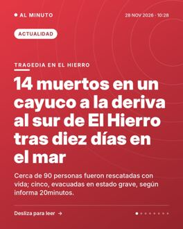

14 muertos en un cayuco a la deriva al sur de El Hierro tras diez días en el mar
Cerca de 90 personas fueron rescatadas con vida; cinco, evacuadas en estado grave, según informa 20minutos.
Ver en Instagram →Sábado 28 de noviembre de 2026 · 3 noticias · actualizado a las 10:38

Cerca de 90 personas fueron rescatadas con vida; cinco, evacuadas en estado grave, según informa 20minutos.
Ver en Instagram →Este domingo 29 de noviembre, casi 39 millones de personas están llamadas a votar entre las 9.00 y las 20.00 horas.
Ver en Instagram →El Supremo mantiene la suspensión del voto a 163.355 nacionalizados por la ley de nietos, según informa El Mundo.
Ver en Instagram →